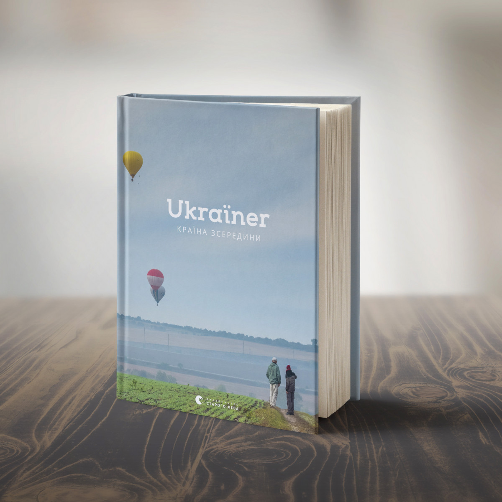

5 СУЧАСНИХ КНИГ ПРО УКРАЇНУ, ЯКІ ПОТРІБНО ПРОЧИТАТИ
Сьогодні Україна переживає складні часи, коли агресія з боку Росії намагається зламати дух українців. Але ми незламні, у нас своя історія, своя мова, своя територія та культура. Україна — суверенна держава, і, щоб ви знали більше про неї, радимо прочитати ці книги.
«Ukraїner. Країна зсередини», Богдан Логвиненко
Україна безмежно велика країна, яка вражає різномаїттям природи. І книга «Ukraїner. Країна зсередини» Богдана Логвиненка ще раз це доводить. Вона створена після масштабної експедиції Україною, яка тривала з літа 2016-го до зими 2018-го року й охопила всі історичні регіони — від Слобожанщини до Поділля, від Волині до Таврії. Книга містить найяскравіші фото з мандрівок унікальними куточками країни. Ілюстрації доповнені історіями людей та місць. Книга надихає на подорожі Україною і вражає неймовірними фото, які демонструють велич та автентичність України.
«Я і КонституціЯ», Лариса Денисенко, Олександр Ільков, Андрій Стельмащук, Альона Шуліма
Сучасна книга для сучасних українців, які хочуть більше дізнатися про закони своєї країни та як вони діють. Неможливо уявити функціонування держави без Конституції, й автори книги «Я і КонституціЯ» чітко це показують. Конституція зачіпає життя кожного громадянина, тому важливо знати про правила держави, про вибори, права і обов’язки суспільства та кожного з нас. Читаючи книгу, ви зрозумієте, що Конституція — це найвищий закон, який встановлює та визначає державний устрій, контролює владу, нагадує про повагу і, наче компас, дозволяє вам почуватися у безпеці та оперувати своїми правами.
«Подолати минуле: глобальна історія України», Ярослав Грицак
Книга про історію України, яка, досягнувши 30-річчя незалежності, все ще шукає шлях для досягнення стабільного розвитку. В книзі порушуються питання про нові вектори для дискусії про сучасне та майбутнє України, як змінюватися зсередини, які цінності та цілі об’єднують українців та багато іншого. Книга створювалася професором Ярославом Грицаком протягом 15 років.
«У будні і свята», Дарія Цвєк
Українці з особливою любов’ю ставляться до національної кухні. Авторка Дарії Цвєк у своїй книзі «У будні і свята» пропонує глибше поринути у різноманіття українських страв, зібравши безліч рецептів українських господинь на щодень. У виданні ви знайдете рецепти страв — від звичайних закусок до наїдків з різдвяного чи великоднього столу.
Серія «Від А до Я»
.png)
Книга буде цікавою як дорослим, так і дітям. У серії, що складається з п’яти одиниць, зібрані факти про відомих постатей України: від великого митрополита Андрея Шептицького, художника та письменника Тараса Шевченка до філософа та педагога Григорія Сковороду. Легка, зрозуміла оповідь, яскраві ілюстрації та історії з життя захоплять маленьких читачів краще, ніж підручники з історії.